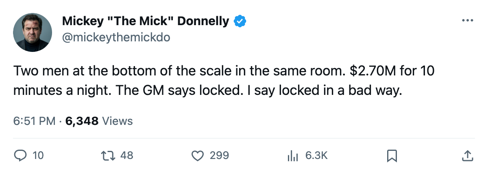

THE CORE IS LOCKED. TWO MEN AT 72 DON'T BELIEVE HIM.
Nashville's GM told The Tunnel everything is fine. Seven men sit at the bottom of the morale scale and two of them play for him.
 Mickey "The Mick" DonnellyColumnist, ex-goalie · The Penalty Box
Mickey "The Mick" DonnellyColumnist, ex-goalie · The Penalty Box
Som Richards told The Tunnel this week that the future is settled. "The core is locked," he said. "And that gives me something most of these clubs don't have right now."
Two men in that locked core sit at the exact bottom of the morale scale.  Andreas Johansson81 is at 72. Antti Laaksonen75 is at 72. They are two of seven men in the league at that number, and the only club carrying two of them.
Andreas Johansson81 is at 72. Antti Laaksonen75 is at 72. They are two of seven men in the league at that number, and the only club carrying two of them.
Johansson plays 82 games at 10.7 minutes a night for $2.70M with 3 years left on his contract. His overall sits at 78. Laaksonen plays 81 games at 9.7 minutes for $1.22M with an overall of 74. Neither man is hurting for money. Both are hurting for something else.
 Nashville Predators finished the season 42-28-7 for 101 points. The payroll is $46.77M, the profit is $27.16M, the cost per point is $0.46M. The room is the 3rd unhappiest in this league, behind only
Nashville Predators finished the season 42-28-7 for 101 points. The payroll is $46.77M, the profit is $27.16M, the cost per point is $0.46M. The room is the 3rd unhappiest in this league, behind only  Edmonton Oilers and
Edmonton Oilers and  Atlanta Thrashers.
Atlanta Thrashers.
They lost in the first round to  Mighty Ducks of Anaheim, a 6 seed, in 6 games. The season series went to Anaheim too, 4-3-2 with one overtime, 26 goals for and 25 against across 10 meetings. Nothing about this matchup suggested the Predators were a better hockey team in a real fight. The model said they were. The room said otherwise.
Mighty Ducks of Anaheim, a 6 seed, in 6 games. The season series went to Anaheim too, 4-3-2 with one overtime, 26 goals for and 25 against across 10 meetings. Nothing about this matchup suggested the Predators were a better hockey team in a real fight. The model said they were. The room said otherwise.
The model works until the men stop believing
Richards also told The Tunnel: "The guys on my roster right now, some of them are on good deals. Good deals don't last." He meant that as reassurance, a promise that he can wait until July. I read it differently. If the core is locked, why does the room rank 28th of 30 in happiness? If good deals don't last, what is keeping a man at 72 motivated through a second-round push that never came?
Coach Dave Tippett won the Jack Adams last spring. I will not say he deserves the hot seat on one first-round exit. I will say that a man at $2.70M playing 10.7 minutes has every right to be unhappy, and the coach is the one who hands out minutes.
The profit is real. The model works. I have written that the model works at other clubs and I meant it. But profit is not morale, and a locked core is not the same thing as a room that believes. You can find the cheapest way to win 42 games and still have two men at the floor of the scale at the end of May.
Johansson is 29. Laaksonen is 29. Both are locked up at 72. Whatever else is true about this franchise, those two men do not think they are part of anything that matters.
